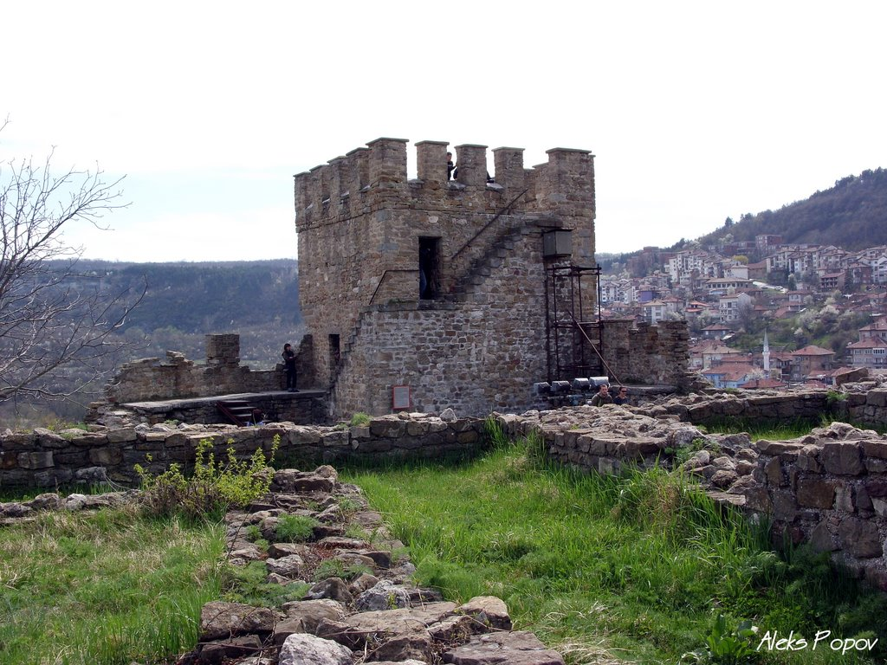
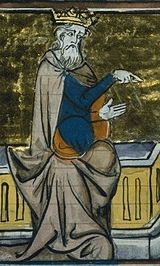

Царевец е хълм във Велико Търново, както и едноименна крепост в средновековния Търновград. Разположена е в близост до стария град на Велико Търново. Тя е била главната българска крепост по време на Второто българско царство (1185 – 1393), когато Търново е столица на царството. През Средновековието хълмът, на който се намира, е изцяло застроен с жилищни и административни постройки. Царевец е сред Стоте национални туристически обекта, има печат на БТС.
Дворцов комплекс - построен от цар Иван Александър
В централната част на хълма, северно от Патриаршията, е разположен Дворцовият комплекс, строен от цар Иван Александър около 1360 г. Той представлява сбор от постройки, включващи тронна зала, дворцова църква и царски покои. Обграден е от вътрешна каменна стена, две бойни кули и два входа, от север и юг. Според житието на Теодосий Търновски в този дворец се е състоял съборът против евреите, свикан от цар Иван Александър в 1360г.Дворецът е бил защитен с крепостна стена и кули като типичен средновековен замък. Главният вход е бил от север и е защитен с три кули. Пред него се е намирал обширен площад. Помещенията в двореца били разположени покрай стените, а средата се оформял обширен двор. В западната част близо до северния вход се намирали две представителни помещения, свързани с обща фасада. Това били тронната зала и приемните помещения, украсени с мрамор и стенопис. Царските покои се намирали на източната стена между северния и южния вход.
Балдуинова кула
| Балдуиновата кула се намира в Архитектурно-музейния резерват „Царевец“, Велико Търново.Югоизточната бойна кула охранявала най-уязвимото място на крепостта Царевград Търнов, Френкхисарската порта и водоизточника на река Янтра. |  |
| Нейното наименование се свързва с легендите за латинския император Балдуин Фландърски, който след битката при Адрианапол през 1205 г. според някои безследно е изчезнал, но според други е пленен от българския цар Калоян и е намерил смъртта си в нея. |  |